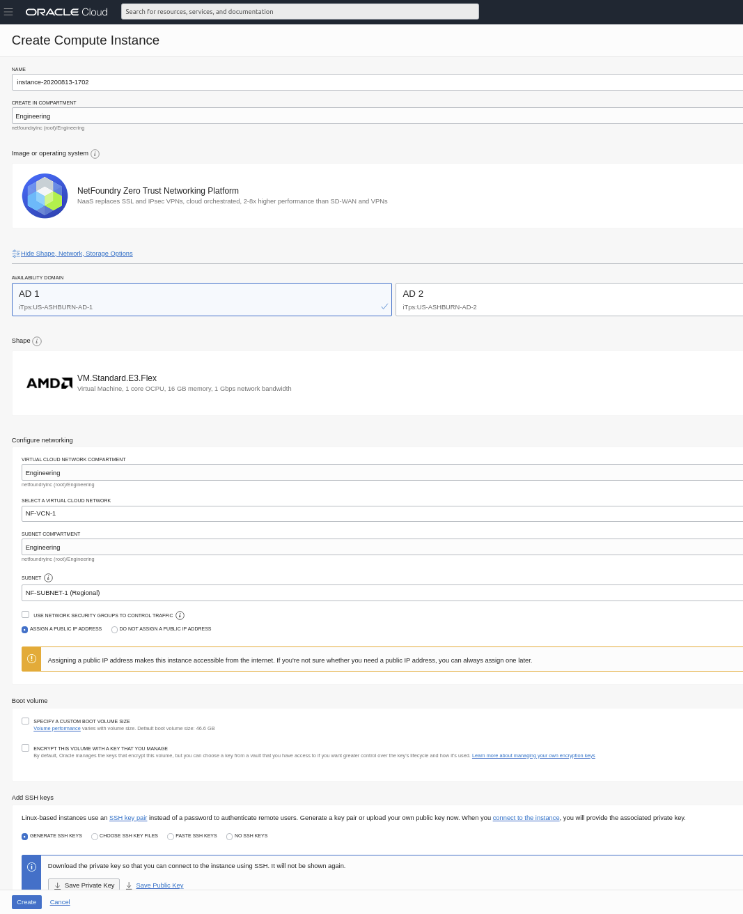

Getting Started Guide
Overview@
This getting started guide will explain how to launch a NetFoundry application gateway in OCP(Oracle Cloud Platform) Compute
Launching an instance in OCP@
Pre Deployment@
Important
The BYOL (Bring Your Own License) licensing model is one that relies on your purchasing a software license separately from our website here and registering your appliance with generated one time key.
Important
Assumption is that the NF Fabric is already up.
Deployment of Appliance@
To get started, visit the OCP Marketplace site by clicking here. If the marketplace doesn't come up, you can go to the search bar that appears, enter NetFoundry Application Gateway and click the resulting solution that appears.
To launch the instance Click on "Get App"

Select a Region, and Click on "Sign In"

Select the Compartment and check the Oracle Terms of Use the Click on "Launch Instance"

Select the Options: 
Once the fields have been supplied, Click on "Create"
Registration via Cloud-init@
If you like to pass in the gateway registration key into the image launching.
Click on "Show Advanced" under the ssh keys assignments

Under the Cloud-Init Select Paste Cloud-init Script

Use the following code: V3->V6:
#!/bin/bash
sudo nfnreg {Registration Key}
#!/bin/bash
sudo router-registration {Registration Key}
Post Deployment@
If you did not supply the GatewayRegistrationKey field during the deployment, you can access the machine via ssh, following the launch. Please Note You must enable external IP in order to reach the launched machine remotely.
Important
The ssh username must be "opc"
Using an SSH client, log in to the machine using its public IP address as the user "nfadmin", using the SSH key or password specified earlier.
ssh -i [path/to/private/key] opc@[public_ip_address]
Once you are logged in to the gateway, follow the instructions to register it to your NetFoundry Network. Look for errors in the registration process output, or "Success" if registration completes successfully. [registration key] is the key you captured earlier. How to Register a NetFoundry Cloud Gateway VW
Setup is complete.